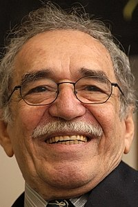

Aracataca, 6 de marzo de 1927 - Ciudad de México, 17 de abril de 2014. Fue un escritor, guionista, editor y periodista colombiano. En 1982 recibió el Premio Nobel de Literatura
Está relacionado de manera inherente con el realismo mágico y su obra más conocida, la novela Cien años de soledad, considerada una de las más representativas de este movimiento literario e incluso se considera que por el éxito de la novela es que tal término se aplica a la literatura surgida a partir de los años 1960 en América Latina.
La notoriedad mundial de García Márquez comenzó cuando Cien años de soledad se publicó en junio de 1967 y en una semana vendió 8000 ejemplares. De allí en adelante, el éxito fue asegurado y la novela vendió una nueva edición cada semana, pasando a vender medio millón de copias en tres años. Fue traducido a más de veinticinco idiomas y ganó seis premios internacionales. El éxito había llegado por fin y el escritor tenía 40 años cuando el mundo aprendió su nombre. Por la correspondencia de admiradores, los premios, entrevistas y las comparecencias era obvio que su vida había cambiado. En 1969, la novela ganó el Chianciano Aprecian en Italia y fue denominado el «Mejor Libro Extranjero» en Francia. En 1970, fue publicado en inglés y fue escogido como uno de los mejores 12 libros del año en Estados Unidos. Dos años después le fue concedido el Premio Rómulo Gallegos y el Premio Neustadt y en 1971, Mario Vargas Llosa publicó un libro acerca de su vida y obra. Para contradecir toda esta exhibición, García Márquez regresó simplemente a la escritura. Decidido a escribir acerca de un dictador, se trasladó con su familia a Barcelona (España) que pasaba sus últimos años bajo el régimen de Francisco Franco.
Otro tema importante en la obra de García Márquez es la invención de la aldea que él llama Macondo. Él usa su ciudad natal de Aracataca (Colombia), como una referencia geográfica para crear esta ciudad imaginaria, pero la representación del pueblo no se limita a esta área específica. García Márquez comparte: «Macondo no es tanto un lugar como un estado de ánimo».